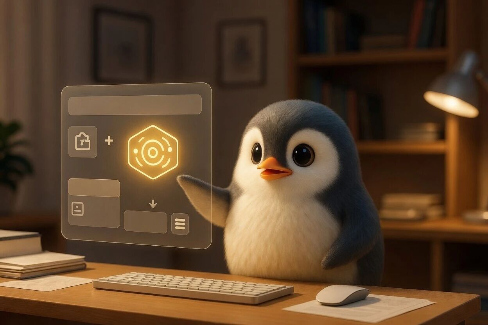

Claude 自己偷偷用着 Linux，却不给 Linux 用户一个桌面版

最近，Anthropic 的 claude-code 仓库里出现了一个挺有意思的 Issue，编号 #65697，标题是：希望官方能出一个 Linux 桌面版。
按理说，这种“求支持某某系统”的请求网上到处都是，不值得大惊小怪。但这份不一样，它附了一篇特别详尽的说明。里面没有情绪化的抱怨，而是把为什么需要、为什么能做、甚至“你们如果不做的理由我都替你们想好了”一条条列了出来，读起来像一份认真的技术提案。
咱们就用大白话，翻翻这份检查单到底说了啥。
情况很简单：Linux 用户被落下了
现在 Claude 的桌面软件，只给了苹果电脑和 Windows 的用户。Linux 用户呢？只有命令行版的 Claude Code，没有那个带图形界面的桌面客户端。
如果只是缺个界面，那倒也无所谓。问题是，Claude 的好几样重要的本事——插件测试、Computer Use（让 AI 操作你的电脑）、语音输入、还有最新的 Cowork 智能体——全都藏在桌面版里。
这意味着什么？如果你是 Linux 用户，想给 Claude 写个插件，抱歉，你得找一台 Mac 或 Windows 电脑才能测试。想用 Cowork 让 AI 帮你干活？对不起，命令行的 Claude Code 里找不到这个入口。
明明每天都用着 Linux 写代码，却得为了一两个功能专门切到别的系统上。 这就是现状。
让人想不通：Linux 其实已经在用了
作者花了挺大篇幅讲了件挺“魔幻”的事。
Anthropic 其实早就在自家的产品里跑 Linux 了。有技术爱好者们研究发现，当 Mac 用户使用 Cowork 功能时，Claude 桌面版会悄悄在后台开一个小的 Ubuntu 虚拟机，然后在这个虚拟机里去执行各种任务。
换句话说，Anthropic 自己都信得过 Linux，甚至把自己最先进的智能体放在 Linux 上跑。而且 Claude Code 的命令行工具，早就为 Linux 准备了签名的软件源，不管是 Ubuntu、Debian 还是 Fedora，装起来都很方便。
造软件的能力、分发渠道、甚至运行环境，全都准备好了。 就差把桌面版的那个“图形外壳”也编译一份给 Linux 用户。
这就好比一家餐厅，厨房里天天用最好的锅炒菜，却跟外面的客人说：“对不起，我们不卖锅。”
最让人担心的事：安全
正因为官方不给，开源社区里就有热心人自己动手了。
一个叫 aaddrick/claude-desktop-debian 的项目，把 Windows 版的 Claude 桌面软件重新打包，做成了 Linux 能用的 deb、rpm、AppImage 等各种格式。项目维护得非常勤快，有近 4500 个星标，还自己弄了软件源和自动更新。
从技术上说，做得相当用心。但从安全上说，有个绕不开的疙瘩：它不是官方认证的。
Claude 桌面版是个需要登录账号、存着你的 API 密钥、还能读取你本地文件的程序。这么多关键的权限，全都交给了一个第三方打包的版本，只因为官方没给别的选择。这事想想就有点悬。
这和打包者本人的人品没关系。问题是，当一个软件官方在某平台缺席时，用户被逼到了只能信任陌生人的地步。 这种结构性的安全风险，才是作者真正担心的。
一个“说法”就行
最有意思的地方来了。这份长长的请求，看起来是在要一个 Linux 桌面版，但作者真正的心里话是：
哪怕官方明确说“我们这两年做不了”，并且把原因说清楚，也行。
他甚至替 Anthropic 想好了“不做”的理由：
用户量可能没那么多，投入资源不划算；
Linux 版本太多太杂，维护起来头疼；
企业里的开发者用命令行和远程开发就够了；
手头还有更重要的功能要赶。
作者管这叫“好的拒绝”（good no）。他真正难受的不是被拒绝，而是官方一直沉默，什么都不说。
你不说，大家就只能猜。猜来猜去，就只好继续用那个没保障的第三方版本，然后心里一直不踏实。
一个折中办法
作者还提了一个很务实的“低配版”解决方案：如果完整桌面版真排不上日程，那能不能做这几件小事：
在官方文档里简单说一句：“Linux 桌面版暂时没有计划，原因是……”；
找个工程师，花小半天看看那个社区打包版，给个简单的安全评价；
告诉 Linux 用户，怎么更安全地保管自己的密钥和配置。
这几件事不费什么功夫，却能让大家心里有底。至少知道，官方看见我们了，也给出了靠谱的安全建议。
写给团队的信
#65697 这个 Issue，像是一封写给团队的信。
它没有“求求了快给我们做吧”的哭诉，而是把事实摆出来，把逻辑讲清楚，把可能的拒绝理由提前列出，最后说：我理解你们可能不做，但请告诉我们一声。
目前这个 Issue 还没有得到官方的回复，但已经被打上了相关标签，正式进入了维护者的视线。评论区里，有人想借此告别自己用的第三方包，有人简单留下一句“yes, please”，还有一条“有人真的在用桌面版吗？”的提问——这些声音，其实都在等同一个东西：一个明确的回应。
诉求已经交上去了。接下来，就等官方给个信儿了。
参考：https://github.com/anthropics/claude-code/issues/65697
文章到这里就结束啦，内容若合你心意，欢迎关注、点赞、分享。感谢驻足阅读，咱们下期再会！